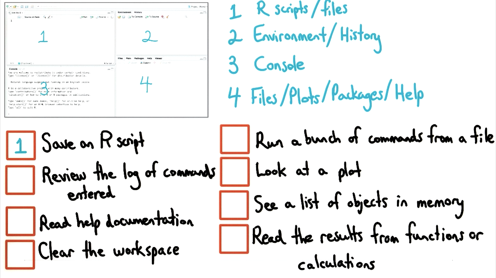

08. RStudio 布局
RStudio 布局
Question:
Start Quiz:

Solution:
INSTRUCTOR NOTE:
所有四个面板均可配置。讨论的布局是 RStudio 的默认布局。你可以前往“工具 -> 选项”更改默认布局……
这个练习假定你使用默认布局。
R 初学者指南：简介 （作者：Sharon Machlis）
R 布局快速指南 （作者：Oscar Torres-Reyna）。
说明：“清理工作空间（Clear the workspace）”的意思是从当前的工作存储器中删除所有变量。